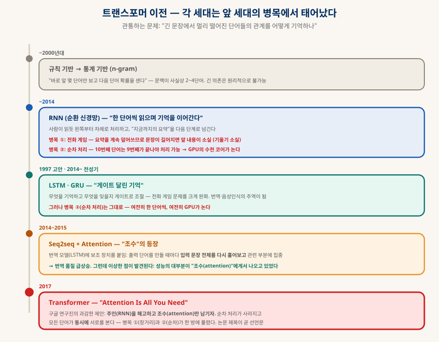
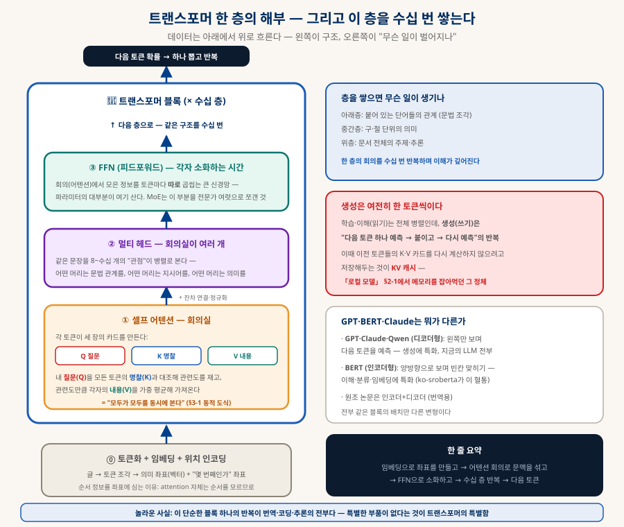
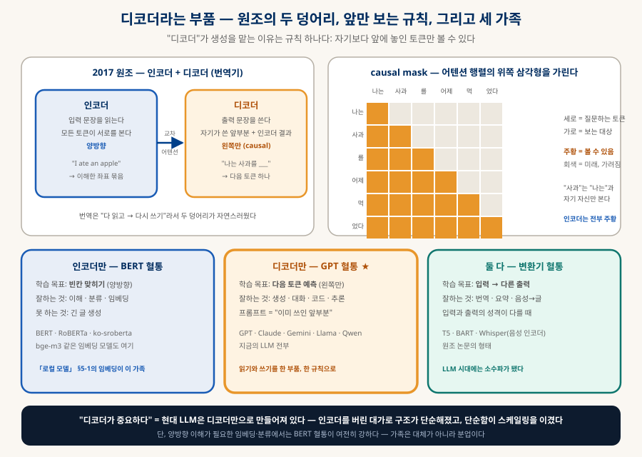
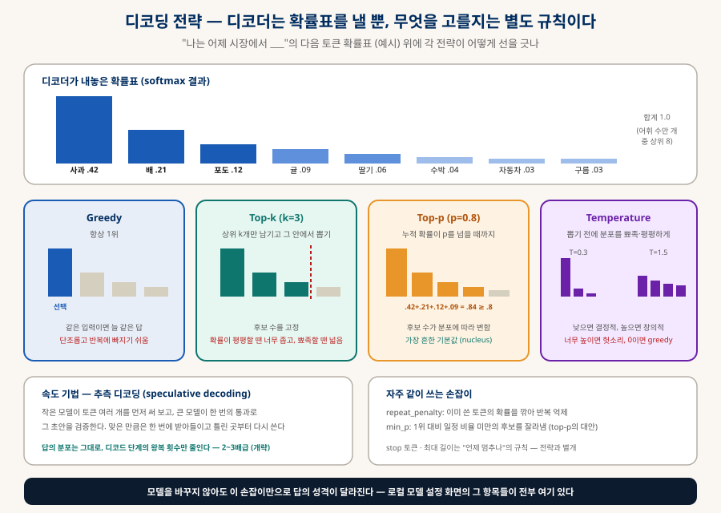
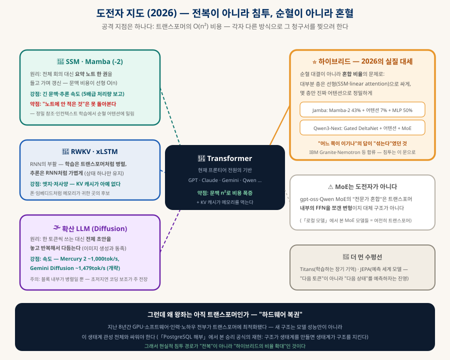

트랜스포머 해부
LLM의 심장 — 모두가 모두를 동시에 본다
GPT도 Claude도 Qwen도, 심장은 2017년 논문 하나에서 나왔다 — "Attention Is All You Need". 무엇이 그렇게 특별했는지를 회의실 비유로 풀고, 그 이전의 계보(RNN·LSTM), 대세가 된 세 가지 이유, n²라는 아킬레스건, 그리고 2026년의 도전자들(Mamba·하이브리드·확산 LLM)까지 — 한 장의 지도로 만든다.
0. 한눈에 보기 — 네 문장
이 문서 전체의 압축
— 8년 만에 AI 전체를 재편 (§2)
한 번에 본다 (§3)
비용 4배 (§6)
순혈 대신 하이브리드 (§7)
0-1. 이 문서의 개념 그래프 — 노드를 눌러 관계를 따라가기 (인터랙티브)
이 문서에 나오는 개념들을 노드로, 이름 붙은 관계를 선으로 그렸다. 노드를 누르면 이웃만 밝아지고 관계 이름이 선 위에 나타나며, 아래 칸에 한 줄 정의와 해당 절로 가는 링크가 뜬다. 끌어서 옮길 수도 있다.
1. 문제 — 언어를 기계로 다루는 세 난제
모든 구조는 이 셋에 대한 답이다
① 순서가 의미다
"개가 사람을 물었다"와 "사람이 개를 물었다"는 같은 단어, 다른 사건. 단어 주머니로는 안 되고 순서를 다뤄야 한다.
② 뜻은 문맥이 정한다
"배가 아프다 / 배를 타다 / 배가 달다" — 같은 "배"의 뜻을 주변 단어가 결정한다. 단어별 고정 사전으로는 불가능.
③ 관계는 멀리 뛴다
"어제 시장에서 산 사과는, 냉장고에 넣어뒀는데도, 그것이 상해 있었다" — "그것"의 정체는 열 단어 밖에 있다. 이 장거리 의존이 최대 난관.
특히 ③이 역대 구조들의 무덤이었다 — 가까운 단어야 어떻게든 되는데, 멀리 떨어진 단어들의 관계를 잃지 않고 유지하는 것이 어려웠다. §2의 계보는 이 문제와의 싸움의 역사다.
2. 이전 계보 — RNN에서 "조수의 반란"까지
각 세대는 앞 세대의 병목에서 태어났다

| 세대 | 아이디어 | 무엇에 막혔나 |
|---|---|---|
| n-gram (통계) | 바로 앞 몇 단어로 다음 단어 확률을 센다 | 문맥이 2~4단어 — 장거리는 원리적으로 불가 |
| RNN | 한 단어씩 읽으며 "지금까지의 요약"을 넘긴다 | 전화 게임(요약을 덮어쓰다 앞 내용 소실) + 순차 처리(병렬 불가 — GPU가 논다) |
| LSTM · GRU | 게이트로 "무엇을 기억·망각할지" 조절 | 전화 게임은 완화했으나 순차 처리는 그대로 |
| Seq2seq + Attention | 출력할 때마다 입력 전체를 다시 훑는 "조수"를 붙임 | 성능이 급등했는데 — 알고 보니 공의 대부분이 조수의 것이었다 |
| Transformer (2017) | 주인(RNN)을 해고하고 조수(attention)만 남긴다 | — (그리고 새 약점이 생긴다: §6) |
3. 핵심 원리 — 회의실 비유로 푸는 셀프 어텐션
Q는 질문, K는 명찰, V는 내용
셀프 어텐션을 회의실로 그려보자. 문장의 각 토큰(단어 조각)이 회의 참석자다. 각 참석자는 세 장의 카드를 만든다:
| 카드 | 뜻 | 예 — "그것" 토큰의 경우 |
|---|---|---|
| Q (Query) | 질문 — "나는 무엇을 찾고 있나" | "나는 지시어다 — 앞에서 언급된 사물을 찾는다" |
| K (Key) | 명찰 — "나는 이런 것으로 검색된다" | "사과" 토큰의 명찰: "나는 앞서 언급된 과일·사물이다" |
| V (Value) | 내용 — "나를 참조하면 이 정보를 준다" | "사과" 토큰의 내용: 과일·먹는 것·상할 수 있는 것… |
진행은 세 걸음이다: ① 내 질문(Q)을 회의실의 모든 참석자의 명찰(K)과 대조해 관련도 점수를 매기고 → ② 점수를 확률(합계 100%)로 바꾸고 → ③ 그 비율만큼 각자의 내용(V)을 섞어 가져온다. 이걸 모든 토큰이 동시에 한다 — 그래서 "셀프(자기들끼리)" 어텐션이다. 아래에서 눈으로 보자:
3-1. 어텐션 스포트라이트 — "그것"은 누구를 보는가 (동적)
A나머지 부품들 — 한 층의 전체 구조

4. 디코더 — 한 이름, 세 가지 뜻
부품 · 추론의 단계 · 생성 전략
LLM 공부를 하다 보면 "디코더가 중요하다"는 말을 계속 만난다. 그런데 이 단어는 세 가지 다른 것을 가리킨다 — 구조의 부품(decoder), 추론의 단계(decode phase), 토큰을 고르는 전략(decoding strategy). 셋 다 "디코드"라는 이름을 쓰기 때문에 섞이면 문장이 통째로 안 읽힌다. 하나씩 분리한다.
A부품으로서의 디코더 — 앞만 보는 규칙 하나
2017년 원조는 번역기였고 인코더와 디코더 두 덩어리였다. 인코더는 입력 문장을 양방향으로 읽어 이해한 좌표를 만들고, 디코더는 그 좌표를 참고하며 출력 문장을 한 토큰씩 쓴다. 디코더의 회의실(§3)에는 규칙이 하나 더 있다 — 자기보다 앞에 앉은 참석자만 볼 수 있다. 뒤에 올 단어는 아직 쓰이지 않았으니 볼 수 없다는 뜻이고, 어텐션 행렬의 위쪽 삼각형을 가리는 이 장치를 causal mask라 부른다. 디코더가 "생성"을 맡는 이유는 이 규칙 하나다.

| 가족 | 학습 목표 | 대표 | 잘하는 것 · 못 하는 것 |
|---|---|---|---|
| 인코더만 | 빈칸 맞히기 (양방향) | BERT · RoBERTa · ko-sroberta · bge-m3 | 이해·분류·임베딩에 강함 · 긴 글 생성은 못 함 |
| 디코더만 ★ | 다음 토큰 예측 (왼쪽만) | GPT · Claude · Gemini · Llama · Qwen | 생성·대화·코드·추론 — 지금의 LLM 전부 |
| 둘 다 | 입력 → 다른 출력 | T5 · BART · Whisper | 번역·요약·음성→글처럼 입력과 출력의 성격이 다를 때 · LLM 시대엔 소수파 |
B왜 디코더만 남았나 — 프롬프트는 "이미 쓰인 앞부분"이다
인코더를 버렸는데 어떻게 질문을 이해하나? 답은 트릭 하나다. 프롬프트를 "이미 쓰인 앞부분"으로 넣어주면 디코더가 그것을 읽고 그 뒤를 이어 쓴다. 읽기와 쓰기가 같은 부품, 같은 규칙(앞만 보기)으로 처리되니 구조가 단순해지고, 학습 목표도 "다음 토큰 하나"로 통일된다. 번역·요약·분류·코딩이 전부 "다음 토큰이 뭔가"의 특수한 경우가 되면서 과제별 모델이 사라지고 하나의 모델이 남았다 — 이것이 2018년 GPT-1이 던진 판단이었고, §5의 스케일링 법칙이 이 단순함 위에서 작동했다.
4-1. 단계로서의 디코드 — 프리필과 디코드 (동적)
디코더만 있는 모델의 추론은 두 단계로 나뉜다. 프롬프트를 통째로 읽는 프리필과, 답을 한 토큰씩 쓰는 디코드. 같은 부품이 일하지만 병목이 완전히 다르다:
| ① 프리필 (prefill) | ② 디코드 (decode) | |
|---|---|---|
| 무엇을 | 프롬프트 전체를 읽어 K·V 카드를 만든다 | 답 토큰을 하나 만들고, 붙이고, 다시 하나 |
| 병렬성 | 토큰 전부 동시 — 행렬이 크다 | 토큰 하나 — 행렬이 얇다 |
| 병목 | 연산 (GPU 코어) | 메모리 대역폭 (가중치 재독) |
| 지표 | 첫 토큰까지의 시간 (TTFT) | 초당 토큰 수 (tok/s) |
| 배치의 효과 | 이미 바쁘므로 이득 작음 | 여러 요청을 묶으면 한 번 읽은 가중치를 나눠 써 처리량이 크게 오름 — 서버가 배치를 쓰는 이유 |
| 메모리 | KV 캐시를 만든다 | KV 캐시를 읽고 키운다 — 토큰마다 한 칸씩 |
C전략으로서의 디코딩 — 확률표에서 무엇을 고르나
디코더는 매 단계 다음 토큰의 확률표를 내놓을 뿐이다. 어느 것을 고를지는 별도의 규칙이고, 그것이 디코딩 전략이다. 모델을 바꾸지 않아도 이 규칙만으로 답의 성격이 달라진다:

| 손잡이 | 하는 일 | 실전 감각 (개략) |
|---|---|---|
| temperature | 확률 분포를 뾰족(낮음)·평평(높음)하게 | 코드·사실 답변 0.1~0.3 · 일상 대화 0.7 · 브레인스토밍 1.0 안팎 · 0이면 greedy |
| top-p | 누적 확률 p까지의 후보만 남김 | 0.9~0.95가 흔한 기본값 · temperature와 둘 중 하나만 크게 만지는 편 |
| top-k | 상위 k개만 남김 | 40 안팎 · 분포 모양을 못 따라가서 요즘은 top-p·min-p에 밀림 |
| min-p | 1위 확률의 일정 비율 미만을 잘라냄 | 0.05 안팎 · 로컬 모델 커뮤니티에서 선호가 늘어난 대안 |
| repeat_penalty | 이미 쓴 토큰의 확률을 깎음 | 1.05~1.15 · 너무 높이면 필요한 단어도 못 씀 |
| 추측 디코딩 | 작은 모델의 초안을 큰 모델이 한 번에 검증 | 답의 분포는 그대로, 디코드 왕복만 줄임 — 2~3배급 속도 (개략) |
5. 왜 대세가 됐나 — 세 요인
성능만으로 이긴 것이 아니다
| 요인 | 내용 |
|---|---|
| ① GPU와의 결혼 ★ | "모두가 모두를 동시에"는 곧 거대한 행렬 곱셈이고, 그것이 정확히 GPU가 잘하는 유일한 일이다(「AI 하드웨어 — 프로세서」). RNN은 순차라 수천 코어를 놀렸지만, 트랜스포머는 전부 먹인다 — 같은 하드웨어에서 수십 배 빠른 학습 |
| ② 스케일링 법칙 | 데이터·파라미터·계산을 키우면 성능이 예측 가능하게 좋아진다는 것이 확인됐다 — "더 크게 만들면 더 좋아진다"는 투자 공식이 성립하자 GPT 시리즈의 군비 경쟁이 시작됐다 |
| ③ 범용성 | 텍스트로 태어났지만 이미지(ViT — 사진 조각을 토큰처럼)·음성·코드·단백질 구조까지 같은 블록으로 — "무엇이든 토큰 시퀀스로 만들면 트랜스포머가 먹는다" |
6. 아킬레스건 — "모두가 모두를"의 청구서
영광의 문장에 약점이 들어 있다
토큰 n개가 서로 전부를 보면 관련도 계산은 n × n번이다. 문맥이 2배로 늘면 계산은 4배, 10배로 늘면 100배 — 이것이 O(n²)이고, 긴 문맥이 비싼 근본 이유다. 눈으로 보자:
6-1. n²의 성장 — 문맥이 2배면 비용은 4배 (동적)
7. 도전자들 (2026) — 전복이 아니라 침투
공격 지점은 하나, 방법은 넷

| 도전자 | 원리 (비유) | 현재 위치 (2026.09 개략) |
|---|---|---|
| SSM · Mamba(-2) | 전체 회의 대신 요약 노트 한 권을 갱신하며 전진 — 비용이 선형 O(n) | 추론 처리량 수 배 보고. 약점: 노트에 안 적은 것은 못 돌아본다 — 정밀 참조·인컨텍스트 학습에서 밀림 → 그래서 혼혈로 |
| RWKV · xLSTM | RNN의 부활 — 학습은 트랜스포머처럼 병렬, 추론은 RNN처럼 상태 하나만 | KV 캐시가 아예 없어 엣지·저사양의 후보 |
| 확산 LLM Mercury·Gemini Diffusion·LLaDA | 한 토큰씩 쓰는 대신 전체 초안을 반복해서 다듬는다 — 이미지 생성과 동족 | 속도가 무기: ~1,000+ tok/s급 보고(개략) — 초저지연 코딩 보조가 주 전장. 내부 블록은 여전히 트랜스포머인 경우가 많다(생성 방식의 도전) |
| 하이브리드 ★ Jamba·Qwen3-Next·Granite | 대부분 층은 선형으로 싸게, 몇 층만 진짜 어텐션으로 정밀하게 | 2026의 실질 대세 — Jamba(Mamba 43%+어텐션 7%), Qwen3-Next(Gated DeltaNet+MoE). "누가 이기나"의 답이 "섞는다"였다 |
8. 그래서 트랜스포머는 끝났나
단기 아니오, 장기 "비율의 문제"
지금 (2026)
프론티어 모델 전원이 트랜스포머(±하이브리드)다. 8년치 하드웨어·도구·인력 최적화라는 생태계 관성이 왕좌를 지킨다(§5의 복권이 계속 배당 중).
침투 경로
전복이 아니라 비율 — 하이브리드 안에서 어텐션 층의 지분이 줄어드는 방식. 이미 "어텐션 7%"짜리 상용 모델이 벤치마크에서 순혈을 이긴다.
관전 포인트
① 하이브리드의 어텐션 비율 추이 ② 확산 LLM이 저지연 시장을 얼마나 먹나 ③ 엣지(폰·임베디드)에서 RWKV류의 채택 — 세 지표만 보면 지형 변화가 읽힌다.
9. 함께 읽기
이 문서에서 갈라지는 길들
| 주제 | 문서 |
|---|---|
| GPU는 왜 행렬 곱셈에 강한가 | 「AI 하드웨어 — 프로세서」 · 「AI 하드웨어 — 메모리」(HBM) |
| KV 캐시의 실전 메모리 계산 | 「현실적으로 사용해볼만한 로컬 모델」 §2-1 |
| 임베딩(토큰→좌표)의 실무 | 「현실적으로 사용해볼만한 로컬 모델」 §5-1 — BERT 혈통의 현재 |
| 이 블록 위에서 도는 것들 | 「로컬 LLM 에이전트」 · 「로컬 LLM 코딩 공장」 · 「AI 오케스트레이션」 |
| "플랫폼이 된 쪽이 이긴다"의 다른 사례 | 「PostgreSQL 해부」 — 생태계 관성의 힘 |
| 극한 양자화라는 또 다른 효율화 축 | 「현실적으로 사용해볼만한 로컬 모델」 §4 (Bonsai) |